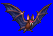
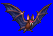
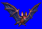
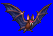

Height: 3-200 cm Weight: <1 lb. - 70 lbs.
Habitat: Cave Origin: South America
Meaning: English word "bat"
The blood-sucking bats that inhabit the South American jungle are symbols of the night and the foreboding atmosphere that accompanies it. Bats are fixtures in popular horror myths, the most popular of which being that of the vampire, which silently changes into a bat and sucks its hapless victim's blood with its sharp fangs. It's interesting to note that of the approximately 1000 species of bats, only 3 actually suck blood.